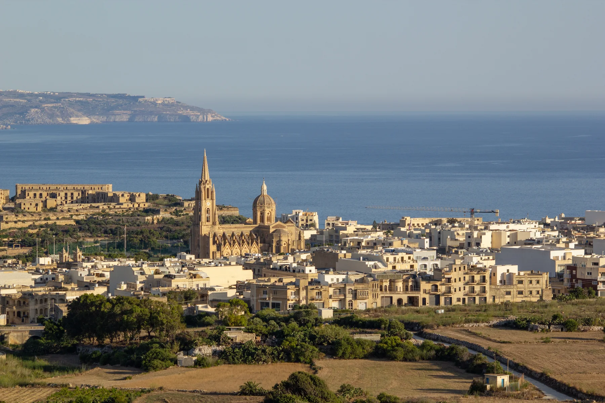

Pjazza tad-Dehra, Pjazza Indipendenza and the church cluster orient the lived-in centre. They do not establish a landmark view from a home.

GĦAJNSIELEM · GOZOVillage streets.
Village streets.
Harbour arrival.
Għajnsielem's lived-in core, Mġarr Harbour, Fort Chambray and Xatt l-Aħmar outer coast are four different settings, not one interchangeable property label.
ONE LOCALITY, DISTINCT SETTINGS
Start with the exact street, not the ferry view.
The locality is Gozo's harbour gateway, but most address questions still begin on land: the real entrance, surrounding street, gradient and route to an everyday anchor.
The ferry terminal is a distinct transport setting. A Għajnsielem label alone does not prove harbour frontage, a sea view or an easy walk to the terminal.
The current official visitor source identifies the fort as a private residential complex. Do not present it as an open public attraction.
The outer coast is separate from the village core and harbour. Never transfer its setting to an unspecified property.
ARRIVAL REALITY
Land, ferry, land — three segments, never one walking line.
Gozo Channel identifies Mġarr and Ċirkewwa as the ferry endpoints. A responsible journey keeps the land approach, operator-backed water crossing and onward Malta segment visually and semantically separate.
Verify the land approach
Start from the exact doorway and route to the terminal. A locality centroid cannot establish pavement, gradient, steps or a comfortable walk.
Label the ferry as a ferry
Use the live Gozo Channel schedule and operating status. Weather and operational conditions can change the service.
Begin a new land journey
Do not merge the Malta-side connection into the water segment or draw an air line across the channel as walking or driving.
EVERYDAY ANCHORS
Three practical sources, then a live check.
These official channels establish civic, transport and health context. Current hours, services, stops, departures, disruptions and clinic availability remain on the live pages.
Għajnsielem Local Council
The council publishes resident services, notices, publications and events. Use the current site for office arrangements, permits and collections.
Open the Local Council ↗Live journey planning
Use Malta Public Transport for the exact stop, direction, date and service alert rather than freezing route numbers or frequencies into the brochure.
Plan with Malta Public Transport ↗Check current Gozo provision
The current government notice changes which Gozo community clinics are operating. Confirm the live clinic and health-centre directories before relying on a service.
Open the current clinic notice ↗ACTIVITIES WITH THEIR OWN ACCESS
Three heritage contexts, three separate checks.
These official records establish place and history, not today's opening, event, accessibility or entry conditions. Confirm current access before setting out.
Old Parish Church
Visit Gozo dates the original construction to 1810–1820 and records later enlargement. The source does not promise that the interior is open when you arrive.
Our Lady of Loreto and chapels
The Local Council lists the current parish church, Old Parish Church, St Anthony's Church, Lourdes Chapel and St Cecilia Chapel. Check each building separately.
Fort Chambray context
The heritage record explains the eighteenth-century fort; the current visitor source says it is now a private residential complex. Respect private access.
FOOD WITHOUT A “BEST OF” CLAIM
Register anchors, not restaurant rankings.
The Malta Tourism Authority's exact GHAJNSIELEM filters returned 18 restaurant and six snack-bar records when checked. These three geographically varied examples are register anchors only; confirm current trading, menu, price, accessibility and opening directly.
ONE80 Restaurant
A verifiable restaurant-register entry, not a quality claim or property-specific walking promise.
Rexy Restaurant
The recorded address establishes locality context only. Check the current offer and operating details directly.
The Parlour Cafe & Bistro
Name and address are recorded; quality, menu, hours, availability and proximity to a home are not inferred.
Open the village-and-harbour context only when you need it.
The map is a broad OpenStreetMap view of Għajnsielem and Mġarr Harbour. It deliberately marks no listing, council boundary, route, distance, journey time, ferry line or guaranteed view and loads only after your click.
Għajnsielem Local Council · Address Registrar · Visit Gozo locality overview · Gozo Cultural Heritage Directorate · Gozo Channel · live ferry schedule · Malta Public Transport · Primary HealthCare clinic notice · MTA restaurant register · MTA snack-bar register. Volatile services, access, departures and operating details require a fresh check.
Għajnsielem neighbourhood edition. No ranking, fixed opening hour, property pin, boundary, guaranteed view, harbour setting, parking claim, accessibility promise, route, distance or journey time is implied.